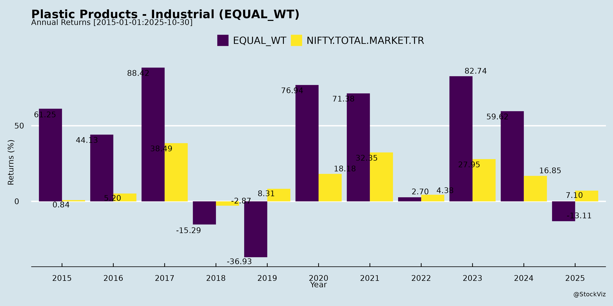
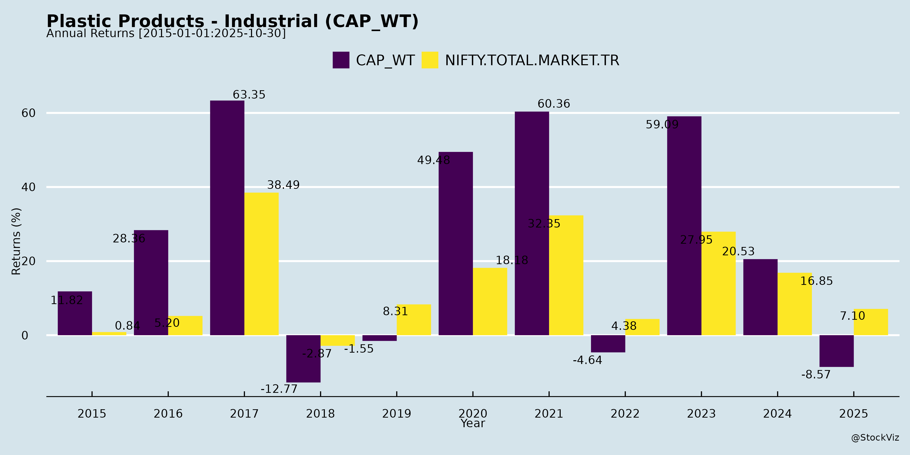
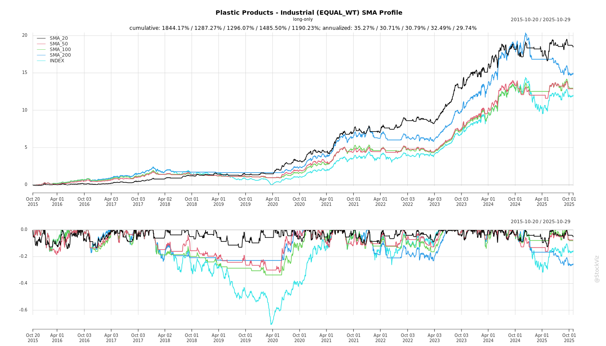
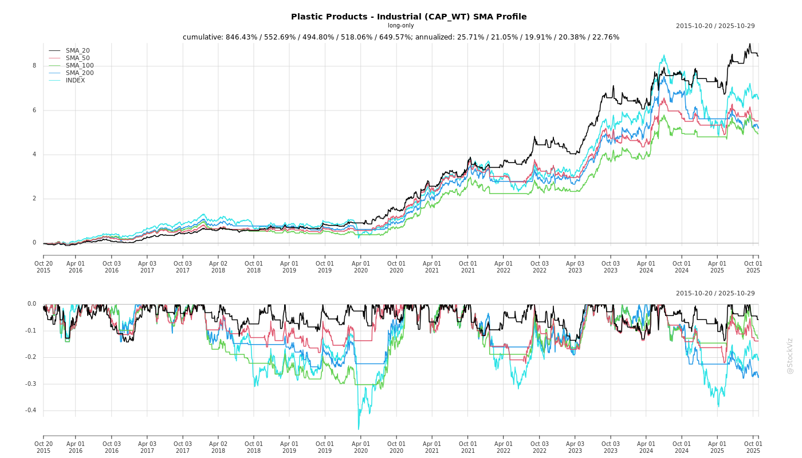
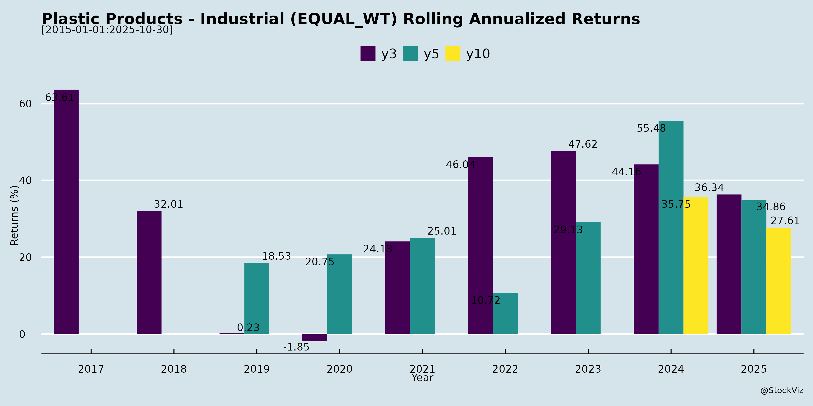

Plastic Products - Industrial
Industry Metrics
February 20, 2026
Annual Returns


Cumulative Returns and Drawdowns

SMA Scenarios


Current Distance from SMA
Rolling Returns


Market Cap
EBIT (% of Industry Total)
Revenue (% of Industry Total)
AI Summaries
Analyst
asof: 2025-11-30
Indian Plastic Products - Industrial Sector Analysis
Overview: The sector, dominated by PVC pipes, fittings, irrigation, and industrial plastics (key players: Supreme, Astral, Finolex, Prince Pipes, Apollo Pipes, Jain Irrigation, Kriti Industries, etc.), faced a challenging H1 FY26 due to extended monsoons, PVC price volatility, and destocking. However, companies reported resilient margins via mix shifts (e.g., CPVC/non-agri) and capacity readiness for H2 recovery. Consensus points to ADD imposition as a pivot, with mid-single to low-double-digit FY26 volume growth amid infra/real estate tailwinds.
Headwinds
- Demand Weakness: Prolonged monsoon (May-Oct) disrupted agri (irrigation/pipes) and infra/real estate; volumes down 2-9% industry-wide (Finolex -6% Q2, Prince flat H1, Apollo/Kriti -33-34%, Jain pipes soft).
- PVC Volatility & Destocking: Sharp resin price falls led to channel caution; no major inventory gains/losses but negative sentiment (Finolex, Prince Pipes, Apollo).
- ADD Delay: Uncertainty (expected Nov) fueled imports/destocking; hurt pricing (Finolex, Prince Pipes).
- Low Utilization/Competition: 70% utilization (Finolex); price wars eroded margins (Apollo EBITDA near zero Q2, Kriti loss).
- Govt Spending Slowdown: Infra/JJM delays (Jain, Apollo); regional concentration amplified monsoon hit (Kriti: MP/RJ/MH down sharply).
Tailwinds
- Monsoon Normalization: Post-Diwali pickup; good rains to boost rabi/summer agri demand (Finolex, Jain, Kriti).
- ADD Expectation: INR3-6/kg upside; sentiment shift for restocking (Finolex, Prince Pipes, Apollo 7-8%).
- Mix Shift: Non-agri/CPVC growth (Finolex 44% non-agri/8% CPVC; Prince CPVC strong); higher realizations (Kriti improved per-unit).
- Capacity/Infra Push: New plants (Prince Bihar, Apollo Varanasi); GST cut on drip/solar (Jain); local CPVC (Reliance/Lubrizol tie-ups).
- Diversification: New products (OPVC/DWC/PLB/UPVC doors: Apollo/Prince); exports up 38% (Jain).
Growth Prospects
- FY26 Volumes: Mid-single (Finolex) to high-single/low-double (Prince 7-9%, Jain 15%+ revenue, Apollo 100-105kt consol vs 85kt FY25); H2 15-20%+ ramp-up.
- H2/FY27+ Drivers: Restocking, infra revival (JJM/desalination), real estate/private projects (Prince 25% projects), agri recovery; CPVC double-digit (Finolex).
- Margins: EBITDA 10-12% FY26 (Finolex/Prince); operating leverage at 70-75% util.; new products 15%+ EBITDA (Jain high-tech 19%).
- Longer-Term: Double-digit sustained (Finolex FY27+); capacity to 520kt+ (Finolex/Prince); beverages/tissue culture/garlic (Jain); pan-India footprint.
Key Risks
- Demand/Weather: Extended weakness or erratic rains; agri seasonality (Q2 mute).
- ADD/Macro: Delay/lower duty; PVC volatility; govt spend delays (JJM/TRAC).
- Competition: Unorganized erosion but price wars; regional concentration (Kriti).
- Execution: Capex overruns (Apollo INR600cr program); receivables/debt (Jain Rs900cr EPC).
- External: Geopolitics/inflation (Jain); low WC efficiency (all).
Sector Outlook: Cautious optimism; H2 inflection via ADD/infra, but FY26 growth capped at 5-10% volumes. FY27+ robust (12-15%+) on capex fruition, non-agri shift. Focus: CPVC/infra diversification to de-risk agri monsoon exposure. ROCE recovery hinges on 75%+ util. and stable RM.
General
asof: 2025-12-01
Summary Analysis: Indian Plastic Products - Industrial Sector
(Based on Q2/H1 FY26 earnings, announcements, and filings from key players like Supreme Industries, Kingfa Science, Jain Irrigation, Prince Pipes, Apollo Pipes, etc. Focus on pipes, fittings, packaging, industrial components, and allied products. Sector context: Plastics piping dominant (~60-70% revenue for leaders), impacted by agri/infra cycles, raw material volatility, and capacity expansions.)
Headwinds (Challenges Pressuring Performance)
- Weather/Monsoon Disruptions: Extended rains delayed agri sowing/installations; Supreme’s piping agri segment degrew severely in H1 despite 11% overall growth; Jain noted Kharif crop damage.
- Raw Material Volatility & Inventory Losses: Falling polymer prices (PVC/CPVC/PE) led to ₹50-60 Cr losses for Supreme in H1; realization pressures (e.g., Supreme Q2 piping up 11% QoQ but offset by costs).
- Subdued Demand in Key Segments: Infra spending cuts by govt (JJM receivables stable at 17 days for Supreme); degrowth in packaging (-2%), industrial products (-8-14%) at Supreme; Jain plastics stable but domestic retail soft.
- Margin Compression: EBITDA margins dipped (Supreme H1: 12.3% vs. guided 14.5-15.5%; inventory/depreciation from expansions/Wavin hit); Kingfa forex losses.
- Regulatory/Compliance: Fines (e.g., Jai Corp ₹2.06L for board composition); ESG ratings (Garware ‘Adequate’) highlight governance needs.
Tailwinds (Supportive Factors)
- Capacity Expansions & Acquisitions: Supreme acquired Wavin (71k MT, 3k MT Q2 sales); Astral Nexelon for CPVC resin (cost savings); ongoing capex (Supreme ₹1300 Cr FY26, Kingfa expansions); new lines (Supreme silent pipes, window profiles).
- Product Innovation/Mix Shift: Value-added products up (Supreme Q2: ₹1073 Cr vs. ₹907 Cr); CPVC growth 26% (Supreme); Jain solar pumps/exports strong.
- Export Momentum: Supreme/Jain plastics exports up 11-50%; Time Technoplast QIP for growth funding.
- Operational Efficiencies: Working capital improvements (Jain NWC down 5-21 days; Supreme cash PAT focus); internal accruals funding capex (Supreme net cash ₹49 Cr).
- Policy/Seasonal Recovery: H2 rebound expected post-monsoon (reservoirs full); GST 2.0 demand boost (Jain).
Growth Prospects (Medium-Term Opportunities)
- Volume Guidance: Supreme: 12-14% FY26 overall, 15-17% piping; Jain Hi-Tech Agri 33%+ H1 growth; Kingfa revenue doubled H1.
- Segment Tailwinds: Piping rebound (plumbing/agri robust H2); protective packaging to hit ₹1000 Cr (Supreme); agro-processing margins doubled (Jain 11.7%).
- Market Expansion: Exports <3% now targeting 5%+; new tech (Supreme Wavin license for SAARC); tissue culture/solar pumps (Jain).
- Capex Ramp-Up: Supreme capacity to 1.2 Mn MT by Mar’26; greenfield units (Bihar/J&K); total FY26 capex ~₹1300 Cr across peers.
- FY26 Outlook: Turnover ₹11k-11.5k Cr (Kingfa); EBITDA 14.5-15%; H2 stronger (Supreme/Jain).
Key Risks
- Commodity Price Swings: Crude/polymer downtrend unless crude crashes further; potential forex losses (Kingfa ₹537L H1).
- Demand Cyclicality: Agri/infra weather/govt spending dependent; subdued H1 volumes (Supreme overall 8%).
- Execution Risks: High capex (Supreme ₹869 Cr H1) amid debt (gross ₹240 Cr, temporary); integration of acquisitions (Wavin).
- Competition/Margins: Inventory losses, fixed costs on lower volumes; CPVC market share battles.
- Regulatory/External: Compliance fines; ESG pressures; global low growth/crude volatility.
Overall Sector Outlook: Moderately positive for H2 FY26/FY27 with 10-15% volume growth potential driven by agri recovery, exports, and expansions. EBITDA margins stabilizing at 14-15% if raw mats steady. Near-term caution on monsoon/infra, but resilient via diversification (pipes ~70%, industrials/packaging growing). Leaders like Supreme/Jain well-positioned via capex/tech.
Investor
asof: 2025-11-30
Summary Analysis: Indian Plastic Products - Industrial Sector (Pipes, Fittings, Irrigation Systems)
The sector, dominated by players like Supreme Industries, Astral, Finolex, Prince Pipes, Apollo Pipes, Jain Irrigation, Kriti Industries, and others, faced a challenging H1 FY26 marked by monsoon disruptions and PVC volatility. However, underlying tailwinds like capacity expansions, product diversification, and impending policy support position it for recovery. Below is a structured analysis based on the provided disclosures and earnings transcripts (Aug-Nov 2025).
Headwinds (Key Challenges Observed)
- Demand Weakness from Extended Monsoons: Agri segment hit hardest (Finolex: -6% Q2 volume, agri drag; Kriti: -34% agri sales; Prince: industry PVC -9% Q2). Infra/real estate subdued due to construction halts (Jain piping soft; Apollo govt spend low).
- PVC Resin Price Volatility & Destocking: Sharp fluctuations led to channel caution/low inventory (Prince, Apollo, Finolex). Delayed ADD fueled uncertainty; some inventory losses (Apollo marginal).
- Muted Volume Growth: H1 volumes flat/declining vs. peers (Prince +1%, Finolex -2%, Kriti -17% revenue). Low utilization (Finolex 70%, Apollo ~43%).
- Competition & Price Wars: Aggressive pricing in pipes (Apollo, Kriti EBITDA pressure); unorganized erosion but organized players fighting for share.
- Geographic Concentration: Core markets (MP, Rajasthan, MH) saw sharper declines (Kriti); limited pan-India penetration.
Tailwinds (Positive Factors)
- Policy Support Imminent: ADD on PVC imports expected Nov 2025 (Finolex/Prince/Apollo: ₹3-6/kg upside, sentiment boost, restocking). GST cuts on drip/solar pumps (Jain: 12%→5%).
- Product Mix Shift: Non-agri growth (Finolex non-agri +7%, CPVC double-digit); new launches (Prince Aquel bathware, Apollo OPVC/PLB/DWC/uPVC doors).
- Capacity Ramp-Ups: Expansions online (Prince Bihar Phase 2, Apollo Varanasi soon); pan-India footprint strengthening logistics.
- Strong Fundamentals: Robust balance sheets (Finolex ₹2,360 Cr net cash; Jain positive CFO); stable spreads (Finolex PVC-EDC ~$535).
- Good Monsoon Aftermath: Potential rabi/summer demand surge (Jain, Finolex).
Growth Prospects
- Volume Guidance FY26: Mid-single to low-double digit (Finolex mid-single; Prince high single-digit; Jain 15%+ revenue; Apollo 100-105 KT consolidated).
- Margin Expansion: EBITDA 10-15% feasible (Finolex 10-12%; Prince double-digit Q4; Jain H1 13.9%). Driven by operating leverage, CPVC/non-agri mix (Finolex CPVC 8%).
- Medium-Term Outlook (FY27-28): 10-20% CAGR via infra/real estate (private projects +20-25%, Prince/Jain); exports (Jain +38% H1); new segments (bathware, OPVC, beverages - Jain ₹400-500 Cr FY27).
- Utilization/Market Share: 74-75%+ utilization (Finolex); organized consolidation favors leaders (25% share among top-3 PVC players, Finolex).
- Capex Discipline: INR100-200 Cr/year maintenance/growth (Finolex); total capacity to support double-digit growth.
Key Risks
| Risk Category | Details | Impacted Companies | Mitigation |
|---|---|---|---|
| Policy/Delay Risks | ADD postponement; JJM/govt spend delays (infra pipes). | All (esp. Jain EPC receivables ₹900 Cr by FY27) | Diversification to private projects/retail. |
| Demand/Macro | Persistent weak agri/infra if rabi disappoints; real estate slowdown. | Finolex, Kriti, Apollo | Non-agri shift (44% mix, Finolex Q2). |
| Raw Material | PVC volatility (EDC/VCM spreads narrow); import surge pre-ADD. | Prince, Apollo | Backward integration discussions (Finolex). |
| Execution | New product ramps (bathware losses ₹10 Cr H1, Prince); geo-expansion delays. | Prince, Apollo, Kriti | Capacity ahead of demand; tech (DMS/SFA, Apollo). |
| Financial | Debt servicing (Jain FY27 ₹200 Cr); WC cycle extension (Prince 85 days). | Jain, Kriti | Strong cash flows (Finolex ₹2,360 Cr surplus). |
| Competition | Price aggression (peers gaining share); unorganized resilience. | Kriti (sharper decline) | Brand/product innovation (CPVC tie-ups). |
Overall Outlook: Sector bottomed out; H2 FY26 recovery via ADD/restocking (15-20% volume upside). Long-term: 12-15% CAGR supported by urbanization/infra (₹10 Tn pipes mkt by 2030), but near-term volatility persists. Leaders with capacity/debt discipline (Finolex, Prince) best positioned. Investors should monitor ADD notification (mid-Nov) and Q3 volumes.
Meeting
asof: 2025-12-02
Analysis of Indian Plastic Products - Industrial Sector (Pipes, Fittings, Films, Agri Inputs)
The sector, encompassing companies like Supreme Industries, Astral, Shaily Engineering Plastics, Finolex, Time Technoplast, Garware Hi-Tech Films, Jain Irrigation, Prince Pipes, Apollo Pipes, R M Drip, and others, demonstrates resilience amid macroeconomic headwinds. Key insights are derived from Q2/H1 FY26 financials (ended Sep 2025), AGMs, board outcomes, and strategic disclosures. Overall, revenue grew 5-15% YoY for most (e.g., Astral +18%, Time Technoplast +10%), driven by infra demand, but margins faced pressure from raw material costs and high bases. EBITDA margins stable at 14-24%; PAT growth varied (e.g., Garware resilient at 16%, Jain Irrigation loss-making).
Headwinds (Challenges)
- High Base Effect & Demand Volatility: Q2 revenues dipped QoQ (e.g., Astral -ve inventory changes, Supreme flat) due to strong prior-year comps; monsoon variability hit agri pipes (Jain: Hi-tech Agri down 38% YoY).
- Geopolitical/Tariff Pressures: Garware cited US tariffs, trade wars impacting exports (77% of revenue); forex losses noted (Astral ₹125 Cr H1).
- Raw Material Inflation: Polymer costs up (e.g., Astral materials 17% of revenue); power/fuel rose 5-10% YoY across firms.
- Working Capital Strain: Inventory buildup (Astral +₹329 Cr, Time Technoplast +₹661 Cr); receivables stretched (Shaily +₹2.4 Cr).
- Regulatory/Competition: Chinese imports in pipes/films; EPR norms adding costs (Garware recycling focus).
Tailwinds (Positives)
- Infra & Policy Boost: Jal Jeevan Mission, housing schemes driving pipes (Prince Pipes, Apollo up 15-20% YoY); agri recovery post-monsoon.
- Capacity Expansions: Astral acquired subsidiaries (Al-Aziz ₹330 Cr); Garware new PPF line; Supreme/RM Drip scaling.
- Export Resilience: 70-80% exports for films/pipes (Time Technoplast +10%, Garware 90+ countries); premium positioning (Garware #1-3 in US/EU).
- Cost Discipline: EBITDA margins held (Astral 23%, Time 14.6%); debt reduction (Astral D/E 0.2x).
- Digital/ESG Push: Garware 200M impressions, GreenPro certified; Supreme postal ballot for governance.
Growth Prospects
- Domestic Infra Boom: Pipes/fittings to grow 12-15% CAGR (urbanization, plumbing); agri pipes rebound (Jain Hi-tech Agri +34% H1).
- Value-Added Shift: Specialty films/PPF (Garware 87% VAP, Astral Paints +12%); exports to MENA/EU (Prince 250+ studios).
- Capex Cycle: ₹1,000-2,000 Cr expansions (Astral ₹1.9B capex); new products (Supreme directors for strategy).
- M&A/Subsidiaries: Astral/Al-Aziz integration; Time Technoplast composites +10%.
- Outlook: FY26 revenue +10-15%, margins 20-25%; ROE 20-30% (Garware PEG 0.86).
Key Risks
| Risk Category | Description | Mitigation |
|---|---|---|
| Commodity | Polymer price volatility (50-60% costs) | Hedging, backward integration (Astral chips). |
| Geopolitical | Tariffs, US/China trade (exports 70%) | Diversification (90+ countries), premium focus. |
| Liquidity/Debt | Borrowings ₹50-200 Cr (D/E 0.2-0.5x); capex heavy. | Strong CFO (Astral ₹4B H1), low leverage. |
| Regulatory | Plastic bans, EPR recycling mandates. | ESG (Garware GreenPro, PCR films). |
| Execution | Monsoon/capex delays; competition from imports. | Agri diversification, R&D (50+ pros at Garware). |
| Forex | Import-dependent; ₹100-200 Cr losses H1. | Natural hedges, derivatives. |
Summary: Sector poised for 12-15% growth FY26 on infra tailwinds, despite headwinds from tariffs/raw mats (revenue flat-to-up 3-18% H1). Tailwinds from policy/capex outweigh risks; focus on VAP/ESG key. Selective plays (Astral/Garware) strong; monitor debt/monsoons. Overall positive, with resilient margins (14-24%).
Press Release
asof: 2025-12-03
Analysis of Indian Plastic Products - Industrial Sector (Pipes, Films, Packaging, etc.)
Based on Q1/Q2 FY26 Earnings Releases from Key Players (Supreme Industries, Astral, Finolex, Garware Hi-Tech, Jain Irrigation, Prince Pipes, Apollo Pipes, Prakash Pipes, etc.)
The sector faces short-term cyclical pressures from monsoon disruptions and raw material volatility but shows resilience through volume growth, capacity expansions, and long-term tailwinds from government initiatives. Overall, H1 FY26 reflects modest volume growth (1-11% YoY across peers) amid revenue declines (4-9% YoY) due to falling PVC/polymer prices, with EBITDA margins contracting 100-300 bps but stabilizing via cost controls.
Headwinds (Short-term Drag on Performance)
- Prolonged/Excess Monsoon Impacting Demand: Agriculture (e.g., pipes for irrigation) and construction segments degrew due to extended rains delaying activities (Supreme: agri piping hit; Apollo/Prince: weak infra/realty; Prakash: muted agri demand).
- PVC/Polymer Price Volatility & Declines: 4-14% YoY drops led to inventory losses, lower realizations, and margin compression (Astral: 14% PVC drop; Finolex/Apollo: muted EBITDA despite volumes; Supreme OP margin -687 bps YoY).
- Subdued Infra/Govt Spending: Lower budgets for pipes/infra (Supreme/Jain: govt capex slowdown; Prince: uneven monsoon + infra delays).
- Geopolitical/Tariff Pressures: Exports hit by uncertainties (Garware: tariffs/geopolitics; Jain: intl challenges).
- Weak Retail/Plumbing Demand: Soft consumer spending (Apollo: home plumbing affected).
Tailwinds (Supporting Resilience)
- Volume Growth Amid Price Pressure: Core strength; e.g., Supreme +12% pipes vol, Prakash +19% pipes vol, Apollo +8% vol, Jain +20% revenue.
- Capacity Expansions & Acquisitions: Aggressive capex (Supreme: Wavin acquisition +71k MT; Prince: Bihar Phase 2; Apollo: 226k to 286k MT target; Astral: plumbing capex up).
- Cost Optimization & Diversification: Margin stability via efficiencies (Supreme/Jain EBITDA margins up 158-227 bps); non-pipe segments growing (Astral paints +20%; Jain exports/food; Prakash packaging stable).
- Backward Integration: Cost savings (Astral: 80% stake in CPVC resin maker).
- Strong Balance Sheets: Net cash positions (Supreme: ₹49 Cr; Astral: ₹489 Cr); internal funding for capex.
Growth Prospects (Medium-Long Term Outlook)
- H2 FY26 Recovery Expected: Peers forecast demand rebound from agri/infra (Supreme: 12-17% vol growth; Prince/Apollo: post-monsoon pickup; Jain: GST 2.0 boost).
- Govt-Driven Demand: Jal Jeevan Mission, PM Awas Yojana (20-40M houses), irrigation/smart cities to drive pipes (Finolex/Apollo highlight sanitation/agri).
- Value-Added/Export Push: New products (Supreme: silent pipes, LPG cylinders; Garware: PPF/TPU; Prince: bathware/CPVC for airports).
- CAGR Targets: 12-25% revenue/vol growth (Apollo: 25%+; Supreme: 12-14%; sector PVC pipes ~15% CAGR FY24-27).
- Exports & Diversification: Jain/Prakash eyeing intl; non-pipe (packaging/films/adhesives) as buffers.
Key Risks
| Risk Category | Description | Examples from Peers |
|---|---|---|
| Raw Material | Prolonged PVC/crude volatility (downtrend unless oil crashes; Supreme warns). | Astral/Finolex: inventory losses from 4-14% price drops. |
| Demand/Macro | Extended weak monsoon/infra spending; rural slowdown. | Supreme/Prince: agri/infra degrowth; Apollo: geopolitics. |
| Execution | Capex delays, integration risks (acquisitions). | Supreme-Wavin; Apollo-Kisan; ₹869-1300 Cr capex plans. |
| Competition | Intense in pipes (organized ~70% share); pricing wars. | Finolex: modest growth despite weak scenario. |
| External | Forex/geopolitics/tariffs; GST/inflation impacts. | Garware/Jain: export headwinds. |
Summary: Short-term headwinds dominate (monsoon/prices → revenue/margin pressure), but tailwinds from expansions/diversification provide buffers. Growth prospects strong (15%+ sector CAGR) driven by infra/water schemes, with H2 recovery likely. Risks center on raw mats/demand; monitor PVC stabilization and govt capex. Peers remain optimistic, targeting double-digit vol growth FY26 via internal accruals.
Copyright © 2023 SAS Data Analytics Pvt. Ltd. All rights reserved.